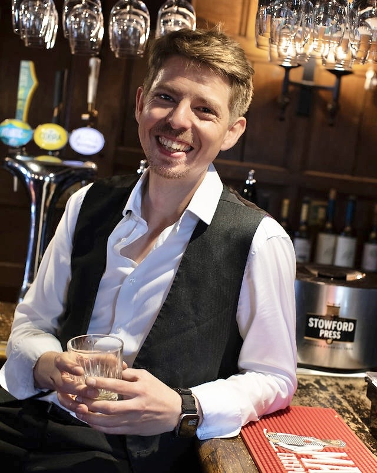

A Small Business Owner already has to wear multiple hats, which can be really tough and I understand that
Chip In might be a new name, but the experience behind it has been built over a long time. I’ve spent more than 15 years in hospitality, from front-of-house through to management across pubs, restaurants, cafés, cinemas and events. I hold a Personal Licence, have helped achieve Cask Marque recognition for real ale and maintain 5-star food-hygiene-rated premises, and I’ve dealt hands-on with staffing, rotas, training, suppliers, stock, POS systems, bookings, customer service and the hundred little problems that keep a busy venue moving.
Alongside that, I’ve built up a broad technical and creative toolkit: website design, digital content, photography, videography, graphic design, video and audio editing, business systems, stock and process systems, online sales and practical troubleshooting. I work regularly with Adobe Premiere Pro, Audition and Photoshop, and I’m used to turning technology into something useful rather than making it more complicated.

I’m also a co-founder of Roll Britannia, an award-winning podcast with more than half a million downloads, where I’ve worked as an editor, producer and voice actor, while also handling live shows, marketing, merchandise, digital content and event delivery at venues and major events including UK Games Expo and MCM Comic Con. My performance background includes training with the National Youth Theatre, alongside voice acting, presenting and live performance, so I’m equally comfortable behind the bar, behind a microphone, behind a camera or behind a computer.
That mix is really what Chip In is about. I can understand the operational side of a business, communicate with customers and teams, organise the practical details, step into an event, create the content, fix the digital problem or build the thing you’ve been putting off. You don’t always need another employee or a specialist agency — sometimes you just need someone adaptable, experienced and happy to get stuck in.
That’s where I Chip In.